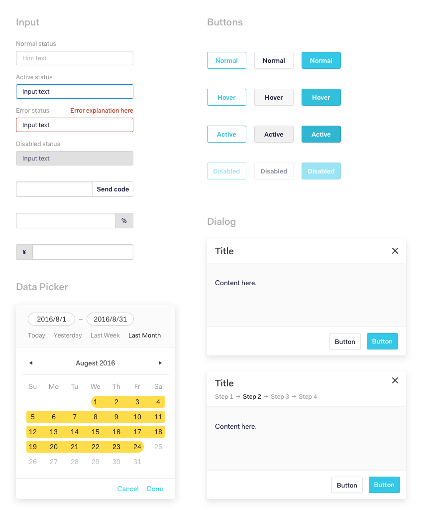

When I first joined Ping++, I was assigned to redesign the dashboard, since the previous version didn't work well as we expanded to meet the needs of businesses.
After spending a few days getting to know what it's about, first thing I did is to brainstorm ideas with our team on how to really achieve our product goals. Basically, it would be an all-new dashboard, so I needed to create a new design system for it. The challenge was to incorporate sales' feedback and product requirement into my thinking, build a product that meets the needs of our customers, and have it all done under a tight launch deadline.
Layout
For the layout, I wanted it to be accessible and intuitive while maintaining simplicity. Here are several quick sketches I did initially.

Eventually we settled on this one.

Pane
The pane in the dashboard is the essential method for the user to check their existing transactions and etc. I decided to go with this pattern so the user can quickly navigate between orders without losing the context.
Designing a system
For a brand-new design system, starting from scratch was both exciting and challenging. It needed to remain consistency with the established brand style like our website while developing guidelines and principles for a new platform.
Fortunately, the existing brand guidelines really gave me a good place to start, which allowed me to leverage some of the existing patterns, like colors, etc.
Typography and colors
UI components

Summary
Looking back, even though I thought our team did really a good job from ideation to implementation, I believe I would have done better if I could consider the limitations of technology more in the design process, since that's where seemed a bit bumpy during the whole road.